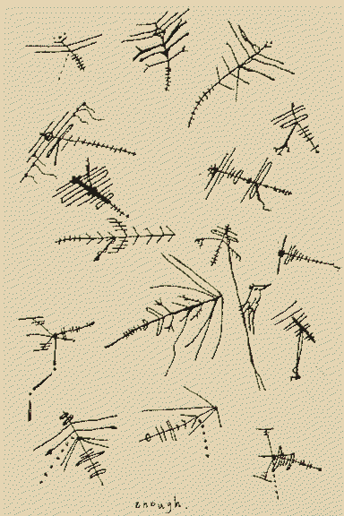

what remains of the outernet
some of the old echoes of radio have redshifted to visible, but to see all the vectorcritters in the wind u need autism eyes
 
television for the fish in flooded suburbia
flamboyant featherstars
fibre-optic kite-fins
radiostaceans
lost pilot tones
love at the end of a string
pesky surveillance stingrays
~v
~~~ ‘,’,’, > : }
~^songbirds spent all that time sitting on antennae, learning how to sing lost digital protocols. I saved a PNG to a bird. starlings have organs to sing in FM/AM, if radio is ever totally compromised by a flood of dreams.